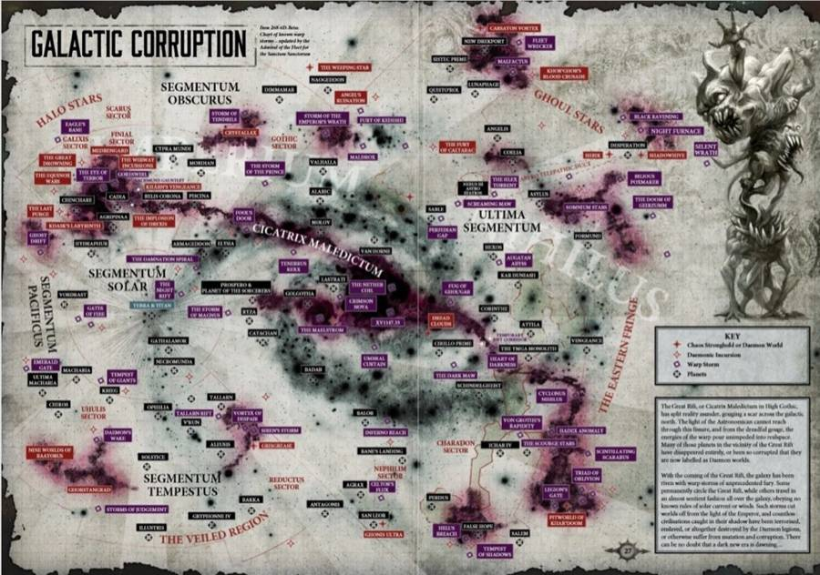
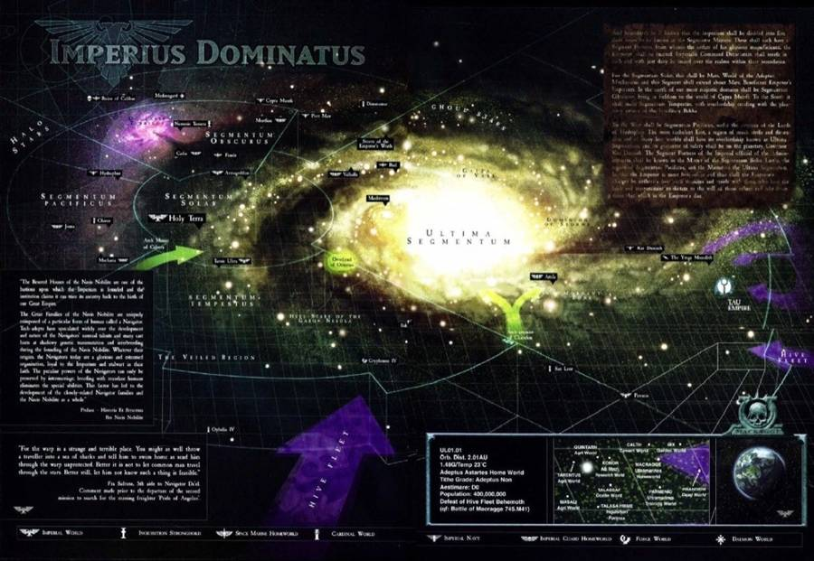
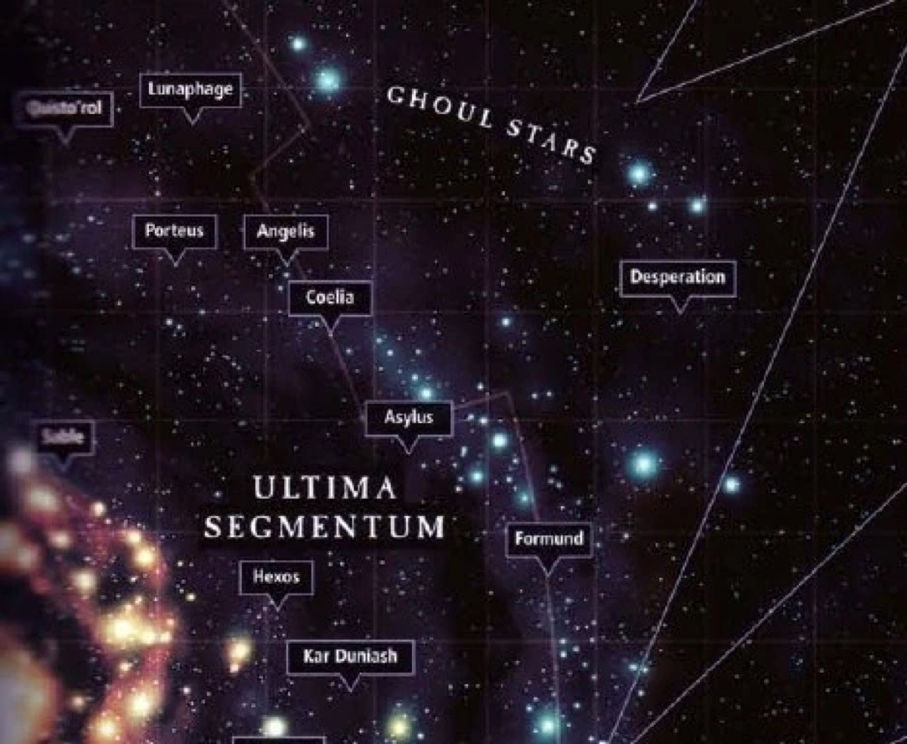

Milky Way
| The Milky Way The galaxy of Mankind | |
|---|---|
 Astra Cartographica chart of the galaxy in the Era Indomitus, with the Great Rift and the regions of warp corruption marked | |
| Type | Barred spiral galaxy |
| Diameter | c. 100,000 light years (Imperial estimate) |
| Human settlement | From the Dark Age of Technology, c. M15 onward |
| Ruling power | Imperium of Mankind, since the Great Crusade (798.M30 – 000.M31) |
| Capital | Terra, Sol System, Segmentum Solar |
| Divisions | Five segmenta, divided into sectors and sub-sectors |
| Great rifts | Eye of Terror (c. M30); Maelstrom; Great Rift (999.M41); Hadex Anomaly (656.M40) |
| Frontiers | Halo Stars; Eastern Fringe; Ghoul Stars; Veiled Region |
| Other powers | Aeldari, Orks, Necrons, Tyranids, T'au Empire, Leagues of Votann, Chaos |
The Milky Way, in Imperial usage simply the galaxy, is the spiral of stars in which Terra lies and across which the Imperium of Mankind extends. Imperial science reckons it some 100,000 light years across, with several hundred thousand million stars. The Imperium claims rule over about a million worlds within it, but the Administratum admits that only a small fraction of the galaxy's systems have ever been charted, and that most of the galaxy has never been visited by any human vessel.[1][2]
Imperial maps divide the galaxy into five segmenta centred on Terra: the Segmentum Solar, the Segmentum Obscurus to the galactic north, the Ultima Segmentum to the east, the Segmentum Tempestus to the south and the Segmentum Pacificus to the west. Beyond them lie frontier regions such as the Halo Stars of the outer rim, the Eastern Fringe and the Ghoul Stars. Travel between the stars depends on the Warp, and the reach of the Imperium has always been limited by the reach of the Astronomican, the psychic beacon by which Navigators steer.[1]
The galaxy has been shaped by its warp storms. The Eye of Terror, born in the Fall of the Aeldari around the 30th millennium, was for ten thousand years the gateway of the Traitor Legions. In 999.M41 the Great Rift opened from the Eye of Terror to the Hadex Anomaly and cut the galaxy in two, dividing the Imperium into the Imperium Sanctus and the Imperium Nihilus. Its crossings, such as the Nachmund Gauntlet, are now among the most fought-over places in the galaxy.[3]
Name and cartography
[edit]The name "Milky Way" comes from the language of ancient Terra, where the galaxy's disc was seen as a pale band across the night sky. In Imperial records the word galaxy is used alone, and the High Gothic Galaxia appears in older charts.[2]
The standard Imperial chart of the galaxy is the Imperius Dominatus, maintained by the Astra Cartographica, an office of the Administratum working with the Imperial Navy and the Navis Nobilite. It places Terra at the centre and names the directions of the compass from it, so that "north" means towards the Segmentum Obscurus and "east" towards Ultima. This is a convention of administration and not of astronomy. Terra lies far from the true centre of the galaxy, whose dense star-fields lie to the east of the Segmentum Solar.[2][1]
Charts are made from the records of Navy patrols, Rogue Trader voyages and Mechanicus Explorator fleets. Because warp travel distorts both distance and time, two charts of the same region seldom agree, and the Cartographica keeps many contradictory surveys of the same worlds.[a] Since the opening of the Great Rift, every chart of the northern galaxy has had to be revised.[3]

History
[edit]Before Mankind
[edit]Mankind is a young species in an old galaxy. Aeldari tradition and the records of the Inquisition hold that, some sixty million Terran years ago, the galaxy was fought over in the War in Heaven between the Old Ones and the Necrontyr, who became the Necrons.[b] The Old Ones are credited with the Webway, with the creation of the Aeldari and, in some accounts, of the Orks. The Necrons, defeated, retreated into stasis on their tomb worlds, where many slept until the late 41st millennium.[4]
For millions of years afterwards the Aeldari Empire ruled much of the galaxy from the core outwards. Its fall, around the 30th millennium, brought the birth of Slaanesh and the creation of the Eye of Terror where the Aeldari heartland had been.[4]
The age of human expansion
[edit]Humanity left the Sol System in the Dark Age of Technology, from about M15 to about M25. With the warp drive and the first Navigators, human colony fleets reached across the galaxy, guided by the Standard Template Construct systems that let any colony build what it needed. Records of the age speak of settlement as far as the galactic core and the Halo Stars.[1] The Men of Iron revolt of about M23 and the Age of Strife that followed, from about M25 to M30, shattered this realm. Warp storms isolated whole regions for thousands of years.[1]
The Great Crusade and after
[edit]The Emperor of Mankind launched the Great Crusade from Terra in 798.M30 to reunite the scattered worlds. The crusade reached every segmentum and penetrated the Eastern Fringe as far as Ultramar, but it never charted the whole galaxy. The Horus Heresy (005–014.M31) ended it. During the Heresy the Ruinstorm divided the galaxy between Terra and Ultramar for several years.[5]
The segmenta were fixed in the reforms that followed the Heresy, about 015–021.M31. For the next ten thousand years the Imperium held roughly the same bounds, losing worlds to warp storms, rebellion and xenos and regaining others through crusades such as the Macharian Crusade (392–399.M41).[1]
The Great Rift
[edit]In 999.M41, at the climax of the Thirteenth Black Crusade and the Fall of Cadia, the Great Rift tore across the galaxy. The Noctis Aeterna that followed blinded astropaths and Navigators across the Imperium, and when it lifted the Astronomican could no longer be seen north of the Rift. Roboute Guilliman launched the Indomitus Crusade around 000.M42 to restore contact with the lost half.[3]
Regions
[edit]The Segmenta
[edit]Imperial space is divided into the five segmenta, each a military command with its own fortress world and fleet. They are divided in turn into sectors and sub-sectors. The segmenta are described in their own article.[1]
| Region | Position (Imperial convention) | Notable features |
|---|---|---|
| Segmentum Solar | Centre | Terra, Mars, Necromunda |
| Segmentum Obscurus | North | Eye of Terror, Cadia (fell 999.M41), Fenris, Gothic Sector, Calixis Sector |
| Ultima Segmentum | East | Ultramar, Baal, the Maelstrom, Octarius |
| Segmentum Tempestus | South | Bakka, Ophelia VII, Catachan |
| Segmentum Pacificus | West | Hydraphur, the western Halo Stars |
| Eastern Fringe | Far east | T'au Empire, Damocles Gulf, Jericho Reach |
| Ghoul Stars | North-east, beyond Ultima | Dead worlds, Necrons |
| Halo Stars | Outer rim | Koronus Expanse |
| Galactic core | East of the Segmentum Solar | Leagues of Votann |
The galactic core
[edit]The core of the galaxy is a region of crowded stars, intense radiation and unstable warp currents. The Astronomican is faint there, and the Navy's charts show it largely blank. Imperial trade routes pass around it, not through it. The Jericho-Maw Warp Gate, found in the 41st millennium, links the Calixis Sector to the Jericho Reach on the far side of the core and opened the way for the Achilus Crusade in 777.M41.[2] The core is the home of the Leagues of Votann, whose ancestors were sent there in the Dark Age of Technology. Their Kindreds returned to Imperial notice in force in the early Era Indomitus.[3] The Necrontyr are believed to have arisen near the core.[4]
The Halo Stars
The Halo Stars are the ancient stars at the outermost edge of the galaxy, beyond which lies the intergalactic void. They are thinly scattered, poorly charted and dangerous, the haunt of pirates, renegades and unknown xenos. Few vessels that go far into them return. The Koronus Expanse, beyond the Calixis Sector of the Segmentum Obscurus, is the best-known region of the Halo Stars and has been opened to Rogue Traders since the 40th millennium.[2][1]
The Eastern Fringe
[edit]The Eastern Fringe is the frontier beyond the Ultima Segmentum, so far from Terra that the Astronomican barely reaches it. It contains the T'au Empire, first catalogued in 789.M35, and it was the first part of the galaxy struck by the Tyranids in 745.M41. The Hadex Anomaly, the eastern end of the Great Rift, lies within it.[1]

The Ghoul Stars
The Ghoul Stars, also called the Ghost Stars, are a region of the outer galaxy beyond the north-eastern reaches of the Ultima Segmentum. The Astronomican is all but invisible there, and Navigators refuse to enter it. The region contains many dead worlds, once settled by humans and destroyed by some unknown power. Fragmentary records of the Nova Terra Interregnum in M34 describe a threat from the Ghoul Stars called the Pale Wasting, but most of them were destroyed.[2][c] The Necron world of Drazak lies within the region. The Death Spectres Chapter keeps watch on its border. In 990.M41 High Marshal Helbrecht of the Black Templars led a crusade into the Ghoul Stars, which was recalled in 998.M41 to fight in the Third War for Armageddon.[2]
The Veiled Region
[edit]The Veiled Region on the southern and south-eastern edge of the galaxy is a region of warp storms and nebulae where many vessels have vanished. Its storms are thought to hide Ork empires and other powers that the Imperium has never charted.[2]
Warp storms and rifts
[edit]The galaxy is scarred by regions where the Warp spills into realspace. The largest are the Eye of Terror in the Segmentum Obscurus and the Maelstrom in the Ultima Segmentum. Lesser storms come and go, sometimes cutting off sectors for centuries. The Hadex Anomaly appeared in the Jericho Reach in 656.M40. The Great Rift of 999.M41 joined many of these regions into a single scar, the Cicatrix Maledictum, which now runs across the whole galaxy.[3]
The Imperium has very few safe routes across the Rift. The Nachmund Gauntlet, between Vigilus and Sangua Terra, is the best known. Other crossings have been reported but not confirmed.[3]
Other powers
[edit]The Imperium shares the galaxy with many other powers. The Aeldari survive in their craftworlds and in the Webway. The Orks are spread across the whole galaxy and gather in Waaaghs that threaten entire sectors. The Necrons have woken on tomb worlds in every segmentum. The Tyranids came from outside the galaxy, beginning with Hive Fleet Behemoth in 745.M41, and Hive Fleet Leviathan rose from beneath the galactic plane in 997.M41. The T'au Empire grows on the Eastern Fringe, and the Leagues of Votann hold the core. The forces of Chaos have held the Eye of Terror since the Heresy and have spread along the Great Rift.[4][3]
Timeline
[edit]| Date | Event |
|---|---|
| c. 60 million years before M1 (estimated) | The War in Heaven; the Necrons enter the Great Sleep |
| c. M15 – c. M25 | The Dark Age of Technology; human settlement spreads across the galaxy |
| c. M23 (estimated) | Revolt of the Men of Iron |
| c. M25 – c. M30 | The Age of Strife; warp storms isolate human worlds |
| c. M30 | Fall of the Aeldari; the Eye of Terror forms |
| 798.M30 – 000.M31 | The Great Crusade |
| 005–014.M31 | The Horus Heresy and the Ruinstorm |
| c. 015–021.M31 | The segmenta fixed in the reforms after the Heresy (estimated) |
| 789.M35 | The T'au home world first catalogued |
| 656.M40 | The Hadex Anomaly appears in the Jericho Reach |
| 745.M41 | Hive Fleet Behemoth reaches the Eastern Fringe |
| 777.M41 | The Achilus Crusade crosses the galactic core by the Jericho-Maw gate |
| 999.M41 | The Great Rift opens; the Imperium Nihilus is cut off |
| c. 000.M42 | The Indomitus Crusade begins |
See also
[edit]Notes
[edit]- ^ The Cartographica's own preface to the Imperius Dominatus warns that "no chart of the void is true for longer than the voyage that made it".
- ^ Imperial dates before the Dark Age of Technology are estimates only. Figures for the War in Heaven are taken from Ordo Xenos digests of Aeldari tradition.
- ^ The Novamarines claim the defeat of the Pale Wasting as one of their earliest honours, but their own chronicles do not describe it.
References
[edit]- ^ a b c d e f g h i Codex Imperialis (rev. 980.M41). Adeptus Terra.
- ^ a b c d e f g h Imperius Dominatus: Commentaries of the Astra Cartographica (rev. 990.M41). Administratum, Terra.
- ^ a b c d e f g Records of the Indomitus Crusade (ongoing). Office of the Lord Commander.
- ^ a b c d Xenographica Ordo Xenos (M40, sealed edition). Inquisition, Terra.
- ^ Chronicles of the Heresy (sealed). Logos Historica Verita, Terra.